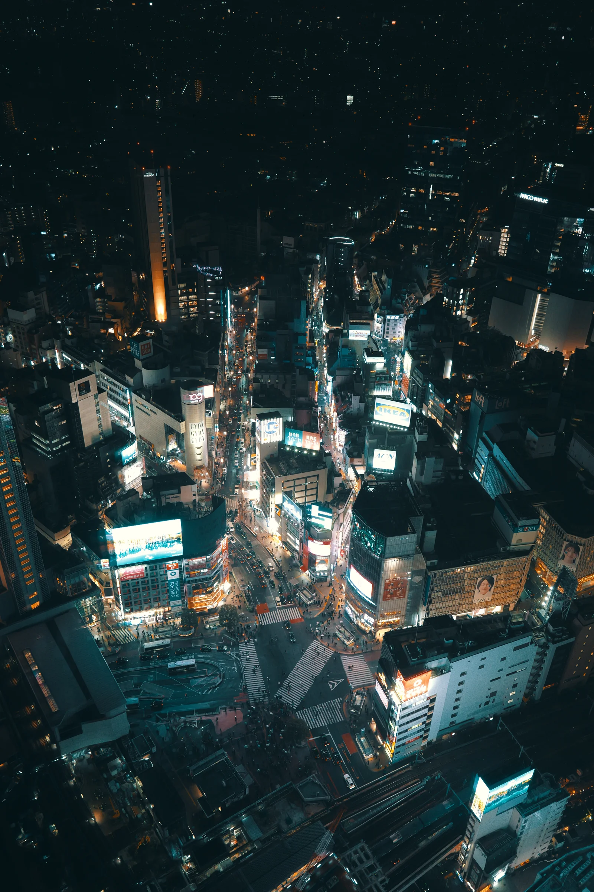
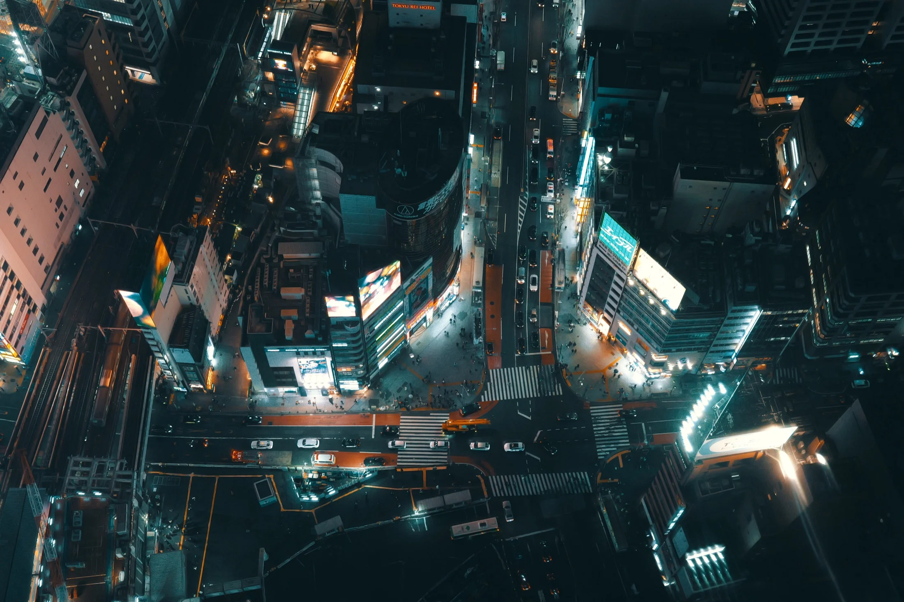
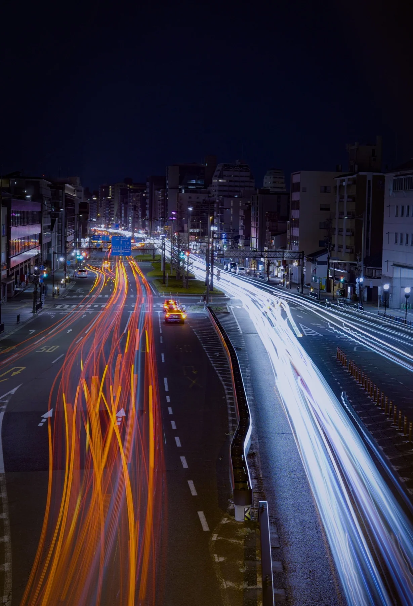
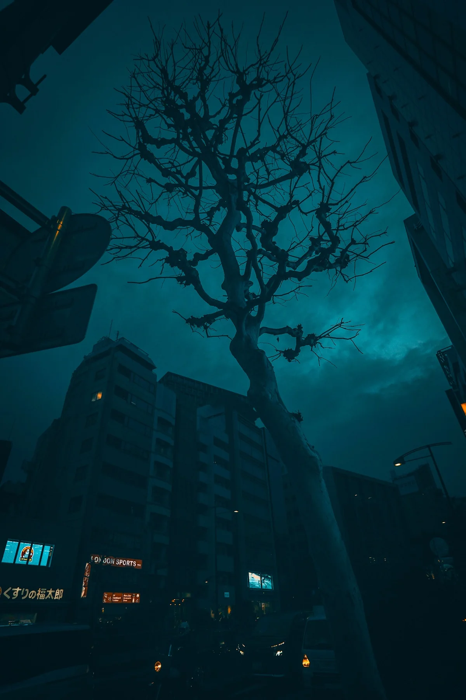
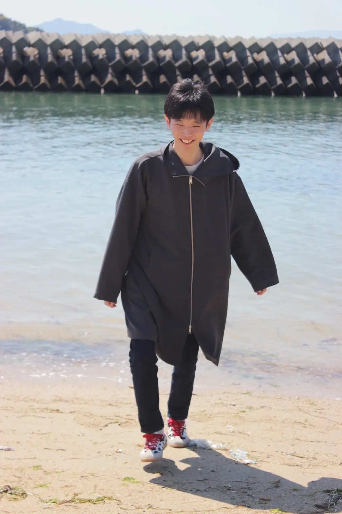

Photography ／ A different point of view
Nagata Koshi
Photo Exhibition
鳥瞰図 05 — 11 October 2026 Discover the exhibitionTOKYO, SHIBUYA 2026
01 / Exhibition
見慣れた街を、
空から読み直す。
写真展・鳥瞰図
この個展では、今年撮影した高いところからの風景を並べました。あなたが見てきた景色が、少しだけ違う景色として見えるきっかけとなればと思います。
2026
MON
SUN
P・SPO GALLERY / MINATOMACHI
12:00 — 18:00
入場無料
P・SPO GALLERY愛媛県松山市湊町3-4-15 向井ビル
02 / Selected Works
From above,
the city changes.
出品作より3点




Portrait / Nagata Koshi03 / Profile
永田 航士Nagata Koshi
愛媛県生まれ。愛媛大学院卒。主に金属材料を6年学んだ。最近の趣味はarXivで雑誌を眺めること。
2026 写真展・鳥瞰図
- 01 / 学生
- 球技をはじめとした様々なスポーツに取り組んだ。
- 02 / 大学
- 愛媛大学 理工学研究科（材料科）にて、主に金属材料についての研究に励んだ。実験系の研究室だったが、論文等情報を集める役割を果たした。でも金融経済が大好きだった。
- 03 / 新卒
- 半導体製造装置会社に入社。AIや社内システムに興味を持ち、興味ある業務を経験した。